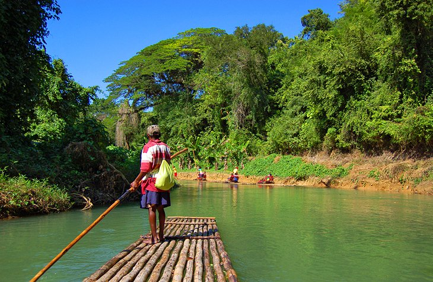
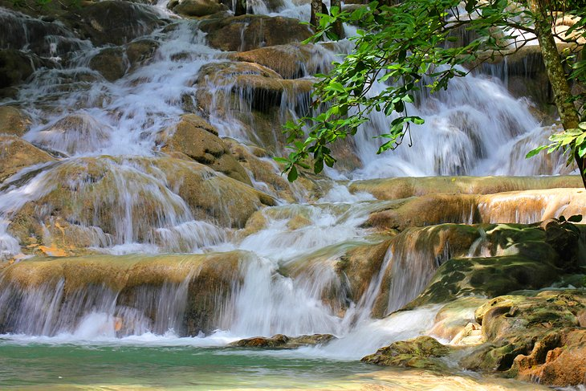
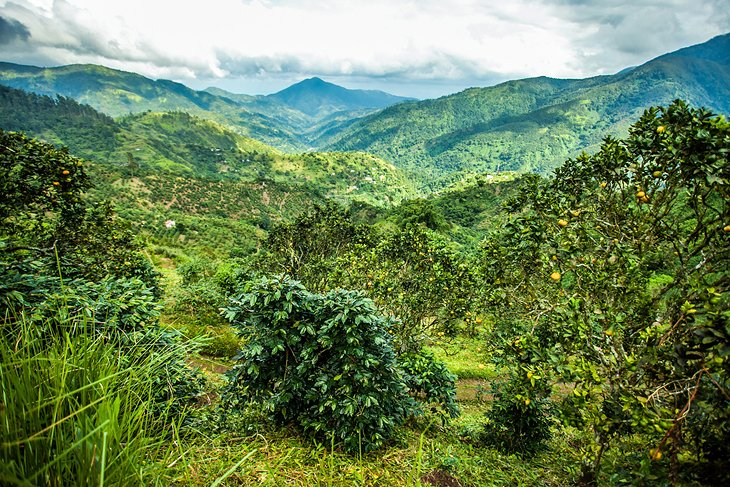

Top Attractions
What to do in Jamaica

01
River Rafting
Your visit wouldn't be complete, until you experience Jamaica River-Rafting adventure from a 30-foot (9 meter) Bamboo raft. A day trip to remember!
02
Dunn's River Fall
Climb the natural tier of this picturesque waterfall, that cascades into the sea.After this, relax and enjoy the white sandy beaches nearby.


03
Blue Mountain
Home to over 800 tropical species and the worlds second largest buterfly. Take a two day trip to the highest peak to see thriling views.
Guided Tours
Meet your tour Guides
"hey, you can call me Rico. I am a food junkie. Enjoying island life also includes a taste of the finest local cuisines. Let me show you the best restaurants on this island."
"I'm Ayanna. I have always had a passion for exploring the hidden gems that nature have to offer. I can show you Jamaica, best kept secrets places."
"hey there, I'm Kayla. I have have lived here all my life. I can show you the hidden gems and culture of island vibes"